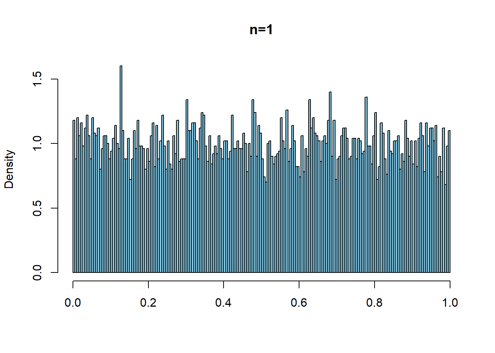
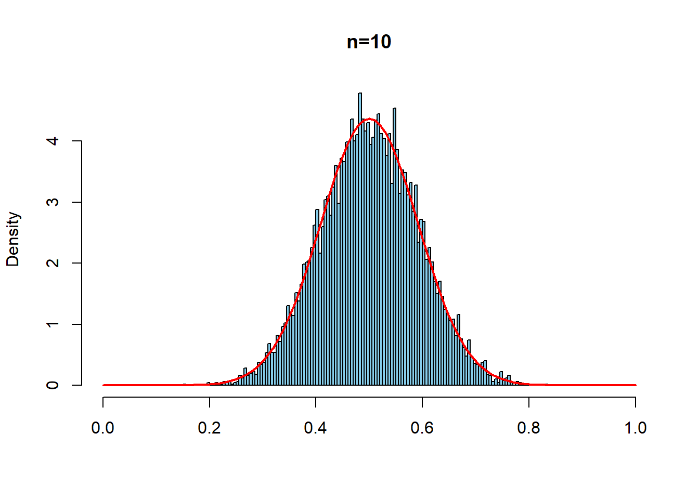
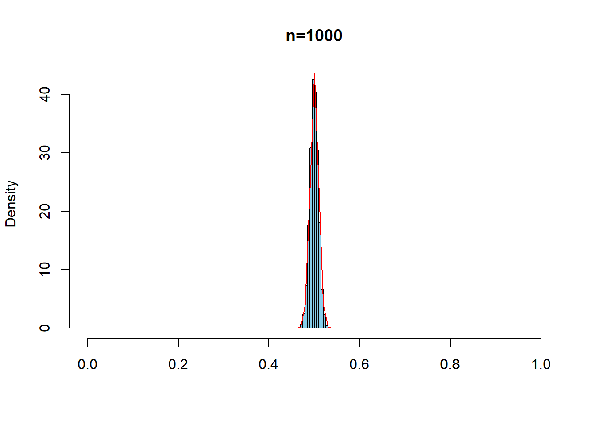
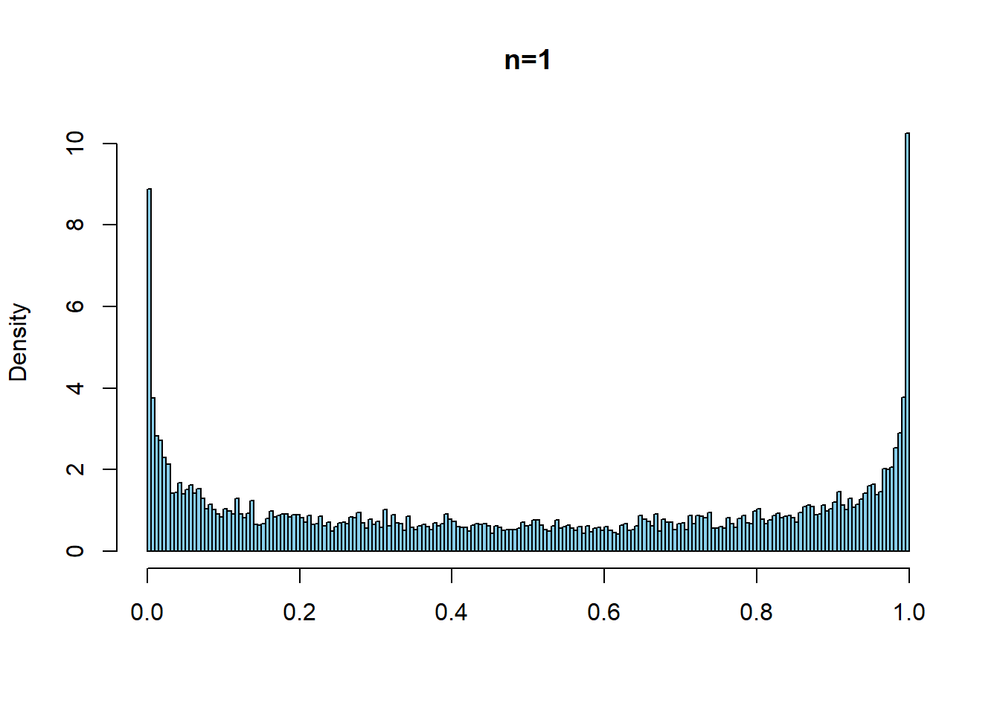
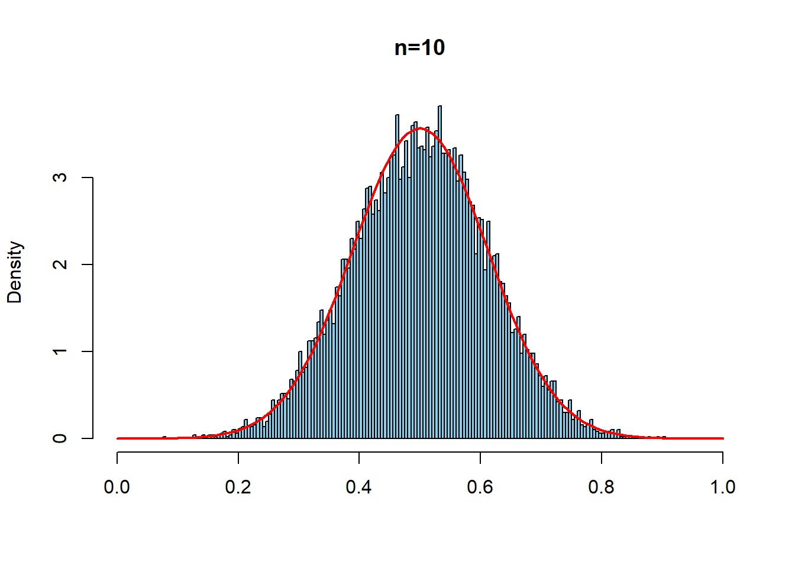
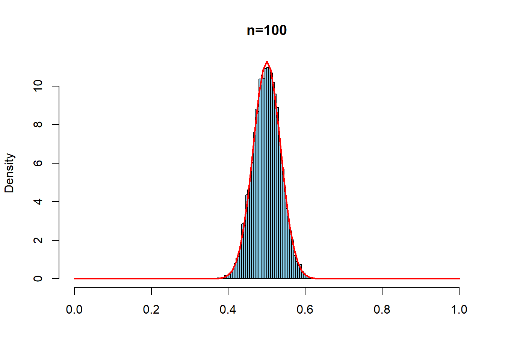
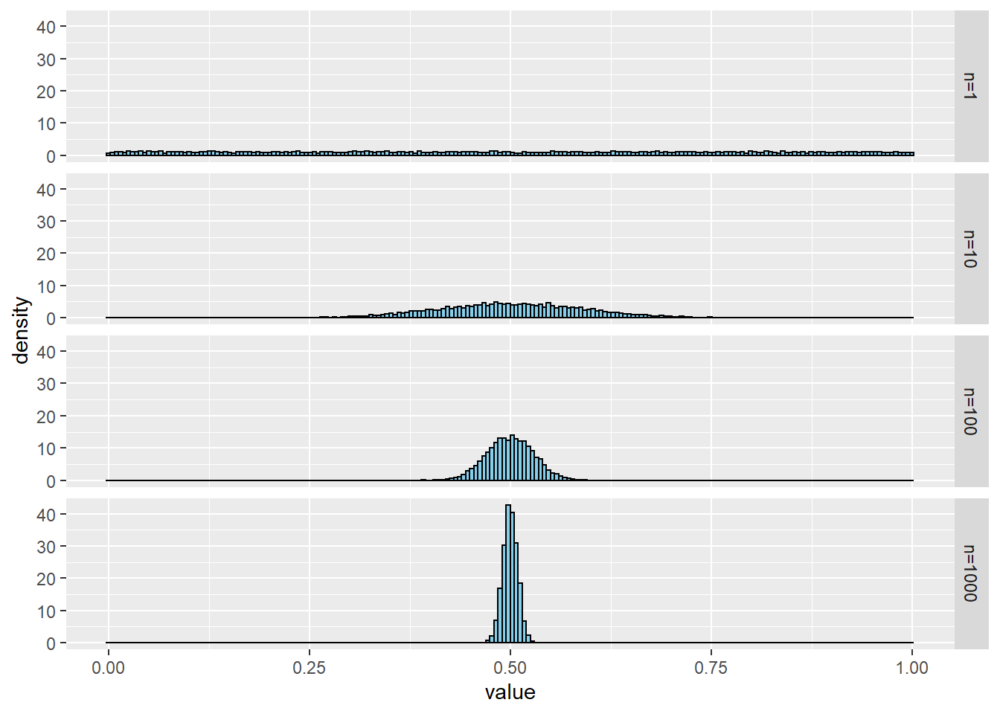

第6章 大数の法則と中心極限定理
大数の法則と中心極限定理を実感するために，ランダムサンプリングデータの標本平均（相加平均）がどのような分布になるかを観察しよう．
6.1 一様分布からのランダムサンプリング
一様分布\(U(0,1)\)から，サンプルサイズ\(n=1,10,100,1000\)のサンプルをとって標本平均を計算する．これを，それぞれ10000回繰り返す．赤線は中心極限定理による標本分布近似の理論的予想である．
set.seed(8931)
repdata1<-replicate(10000,mean(runif(1,0,1)))
repdata2<-replicate(10000,mean(runif(10,0,1)))
repdata3<-replicate(10000,mean(runif(100,0,1)))
repdata4<-replicate(10000,mean(runif(1000,0,1)))
hist(repdata1, prob=TRUE, breaks = seq(0,1,0.005),
xlim=c(0,1), main = "n=1", xlab ="", col="skyblue")
hist(repdata2, prob=TRUE, breaks = seq(0,1,0.005),
xlim=c(0,1), main = "n=10", xlab ="", col="skyblue")
curve(dnorm(x, mean=1/2, sd= sqrt(1/12)/sqrt(10)),
type="l", col = "red", lwd=2, add=T)
hist(repdata3, prob=TRUE, breaks = seq(0,1,0.005),
xlim=c(0,1), main = "n=100", xlab ="", col="skyblue")
curve(dnorm(x, mean=1/2, sd= sqrt(1/12)/sqrt(100)),
type="l", col = "red", lwd=2, add=T)
hist(repdata4, prob=TRUE, breaks = seq(0,1,0.005),
xlim=c(0,1), main = "n=1000", xlab ="", col="skyblue")
curve(dnorm(x, mean=1/2, sd= sqrt(1/12)/sqrt(1000)),
type="l", col = "red", add=T)
6.2 ベータ分布\(Beta(0.5,0.5)\)からのランダムサンプリング
同じことをよりゆがんだ分布としてベータ分布\(Beta(0.5,0.5)\)でもやってみる
repdata5<-replicate(10000,mean(rbeta(1,0.5,0.5)))
repdata6<-replicate(10000,mean(rbeta(10,0.5,0.5)))
repdata7<-replicate(10000,mean(rbeta(100,0.5,0.5)))
repdata8<-replicate(10000,mean(rbeta(1000,0.5,0.5)))
hist(repdata5, prob=TRUE, breaks = seq(0,1,0.005),
xlim=c(0,1), main = "n=1", xlab ="", col="skyblue")
hist(repdata6, prob=TRUE, breaks = seq(0,1,0.005),
xlim=c(0,1), main = "n=10", xlab ="", col="skyblue")
curve(dnorm(x, mean=1/2, sd= sqrt(1/8)/sqrt(10)),
type="l", col = "red", lwd=2, add=T)
hist(repdata7, prob=TRUE, breaks = seq(0,1,0.005),
xlim=c(0,1), main = "n=100", xlab ="", col="skyblue")
curve(dnorm(x, mean=1/2, sd= sqrt(1/8)/sqrt(100)),
type="l", col = "red", lwd=2, add=T)
hist(repdata8, prob=TRUE, breaks = seq(0,1,0.005),
xlim=c(0,1), main = "n=1000", xlab ="", col="skyblue")
curve(dnorm(x, mean=1/2, sd= sqrt(1/8)/sqrt(1000)),
type="l", col = "red", lwd=2, add=T)
6.3 おまけggplotで書く
要tidyverse
library(tidyverse)
tibble("n=1"=repdata1,"n=10"=repdata2,
"n=100"=repdata3,"n=1000"=repdata4) %>%
pivot_longer(everything(),
names_to = "key",
values_to = "value") %>%
ggplot() +
geom_histogram(aes(x = value, y =..density..),
bins=200,fill="skyblue", color= "black") +
# geom_density(adjust = 4, colour='black', size=1.25) +
facet_grid(key~.)